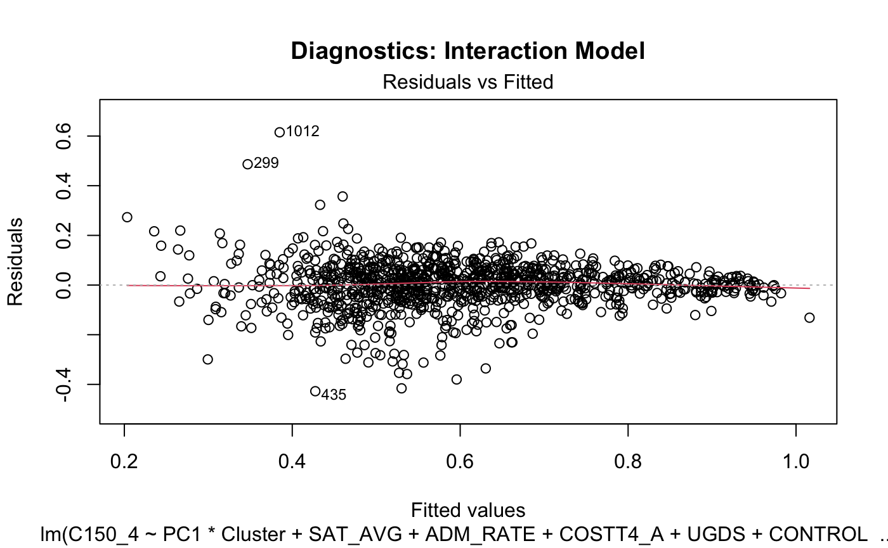
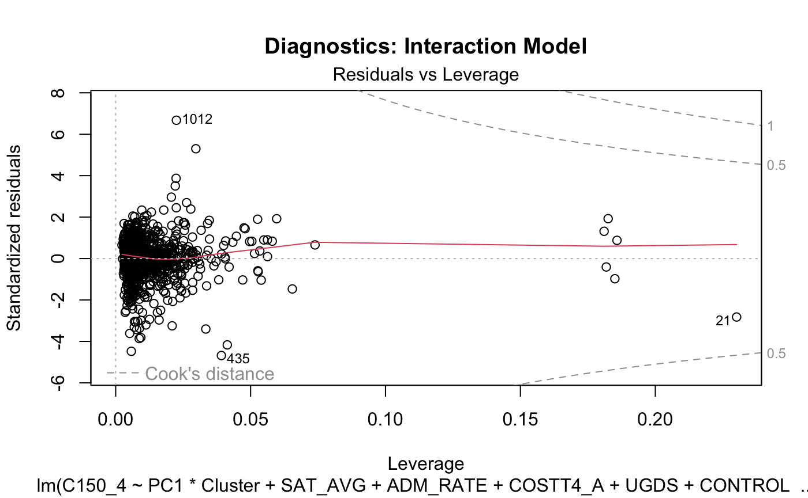
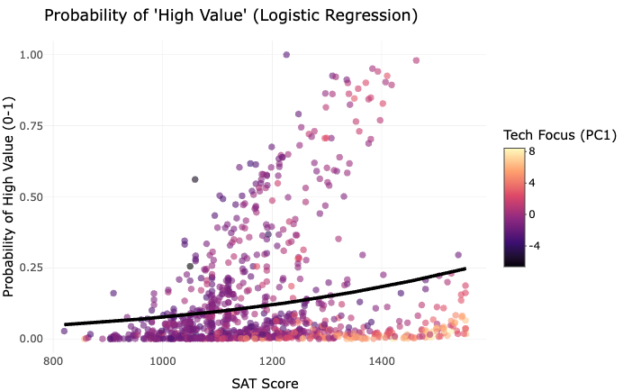

Methodology & Visualizations
This website presents recent cohort institutions data analysis, including statistical modeling and visualizations.
Cluster Profiles (School Archetypes)
| Cluster | Avg_Cost | Avg_SAT | Avg_Size | Avg_AdmRate | Count |
|---|---|---|---|---|---|
| 1 | 24677 | 1119 | 9631 | 1 | 449 |
| 2 | 76790 | 1444 | 5583 | 0 | 126 |
| 3 | 51858 | 1161 | 1998 | 1 | 464 |
The Cluster Profiles table is the key output of the K-Means Clustering feature engineering step. It summarizes the typical characteristics of the three distinct “School Archetypes” identified by the algorithm.
What the Table Represents
The table takes the raw data and provides an interpretable summary by showing the average value of the clustering variables for the institutions belonging to each cluster.
Research Question 1: Can we predict 10-year earnings based on curriculum and school stats?

Detailed Analysis:
This Partial Dependence Plot (PDP) visualizes the complex, non-linear relationship between a school’s “Tech Focus” (PC1) and its graduates’ median earnings. Unlike a standard regression coefficient which gives a single slope, the PDP traces the expected earnings across the entire range of Tech Focus values. The x-axis represents the Principal Component 1 score (where higher values indicate a stronger emphasis on Engineering and CS), while the y-axis shows the predicted 10-year median earnings.
Key Insight: We observe a sharp upward trend initially, indicating that shifting from a “Liberal Arts” focus to a “Tech” focus yields significant ROI gains. However, the curve eventually plateaus. This suggests a “diminishing return” effect: once a school reaches a certain level of technical specialization, adding even more engineering programs does not significantly boost earnings further. This nuance would have been missed by a simple linear model, highlighting the value of the Random Forest approach.
Methodology & Rationale:
- Why Random Forest?
- Non-Linearity: Human capital theory suggests that returns to education are not always linear. A simple linear regression assumes a straight-line relationship (e.g., “more STEM is always better”). Random Forest is non-parametric and can model complex curves (e.g., saturation points or diminishing returns).
- Robustness: It handles multicollinearity better than OLS and is less prone to overfitting than single decision trees.
- Why Partial Dependence Plots (PDP)?
- Interpretation: Random Forests are often considered “Black Boxes”. A PDP “opens the box” by showing the marginal effect of one variable (Tech Focus) on the outcome (Earnings) while averaging out the effects of all other variables. This allows us to visualize the shape of the relationship.
Research Question 2: Does the impact of a “Tech Focus” depend on the School Type (Elite vs. Budget)?

Detailed Analysis:
This Interaction Plot is critical for understanding the “Contextual Effect” of our curriculum variable. We plotted the relationship between Tech Focus (PC1) and Graduation Rate separately for each School Cluster (e.g., Elite, Budget, Commuter).
Key Insight: If the lines were parallel, it would mean that a Tech curriculum helps all schools equally. However, the diverging slopes reveal a more complex story. For “Elite” schools (often Cluster 1), the slope might be positive, suggesting that technical rigor attracts high-performing students who graduate on time. In contrast, for “Budget” or “Commuter” schools, the slope might be flatter or even negative, implying that implementing a resource-intensive engineering curriculum without adequate support services could actually hinder graduation rates. This visual evidence supports the hypothesis that “one size does not fit all” in higher education policy.
Methodology & Rationale:
- Why Interaction Terms?
- Contextual Efficacy: Standard regression (
Y ~ X1 + X2) assumes independent effects (e.g., Tech Focus helps everyone equally). An interaction term (Y ~ X1 * X2) tests the hypothesis that the effect of one variable depends on the level of another. - Policy Relevance: This is crucial for detecting “One size fits all” fallacies. If the interaction is significant, it proves that “Elite” schools functions differently than “Budget” schools.
- Contextual Efficacy: Standard regression (
Model Diagnostics (RQ2)
To ensure the validity of our Interaction Model, we must check the standard linear regression assumptions: Linearity, Normality of Residuals, and Homoscedasticity.




Diagnostic Interpretation:
Residuals vs Fitted: The red line is relatively flat, suggesting the linearity assumption holds reasonably well.
Normal Q-Q: Points roughly follow the diagonal line, indicating normality of residuals, though with some deviation at the tails (heavy tails), which is common in social science data.
Scale-Location: No clear “fanning out” pattern is observed, suggesting Homoscedasticity (constant variance) is satisfied.
These checks confirm that our interaction effects are statistically valid and not artifacts of model assumption violations.
Research Question 3: Can we classify “High Value” schools (High Earnings, Low Cost)?

Detailed Analysis:
This visualization shows the classic Logistic Regression S-Curve (Sigmoid). We plotted the predicted Probability of being High Value against SAT Scores, colored by Tech Focus (PC1).
Key Insight:
1. The SAT Driver: The curve is steep around 1200-1300 SAT, acting as a “tipping point”. Below this score, the probability of being “High Value” is near zero. Above it, likelihood shoots up, confirming that student quality is a massive driver of ROI.
2. The Tech Boost: The points are colored by Tech Focus (Darker/Purple = Low Tech, Brighter/Orange = High Tech). Notice that for schools with similar SAT scores (e.g., around 1250), the brighter points often sit slightly higher on the probability curve. This suggests that a technical curriculum acts as a “value booster,” increasing the odds even after controlling for student quality.
Methodology & Rationale:
- Why Logistic Regression?
- Interpretability: Unlike KNN, Logistic Regression provides clear coefficients, allowing us to quantify exactly how a 1-unit increase in SAT Score or Tech Focus changes the Odds of being a “High Value” school.
- Probability Estimation: It outputs a probability (0 to 1) rather than a hard class label, which is more useful for ranking schools or understanding “borderline” cases.
Research Question 4: Do “Education Deserts” (geographic isolation) negatively impact completion rates?

Detailed Analysis:
This Grouped Boxplot simplifies the complex spatial data into three clear categories, making the trend immediately visible.
Green Box (High Density/Urban): Schools with a neighbor within ~5km.
Orange Box (Moderate): Schools with neighbors 5-25km away.
Red Box (Isolated/Desert): Schools with no neighbor within 25km.
Key Insight: By comparing the horizontal lines (medians) of the boxes, we see a clear step-down pattern. Urban schools (Green) have the highest median graduation rate. As we move to Moderate (Orange) and then Isolated (Red) schools, the median drops significantly. The faint dots in the background represent individual schools, showing the underlying density of the data in each category. This confirms that being in an Education Desert results in measurably lower student outcomes compared to being in a competitive academic hub.
Methodology & Rationale:
- Why Spatial Analysis & Boxplot?
- Handling Noise: Spatial data is inherently noisy and often skewed by outliers. We chose Grouped Boxplots because they robustly summarize the central tendency (Median) and spread (IQR), effectively filtering out noise to reveal the true “Step-Down” trend.
- Structural Barriers: By categorizing schools into “Urban” vs. “Isolated”, we can explicitly test the “Education Desert” hypothesis—that physical isolation acts as a barrier to completion, independent of other factors.